Tema 3: Termoquímica
1. Introducción a la Termoquímica
Termoquímica. Parte de la termodinámica que estudia el intercambio de energía en las reacciones químicas.
Las reacciones químicas obedecen a dos leyes fundamentales:
-
La ley de la conservación de la masa y
-
La ley de la conservación de la energía.
La energía no se crea ni se destruye, solo se convierte de una forma en otra.
La energía total del universo permanece constante.
Todas las reacciones químicas absorben o liberan energía, por lo general en forma de calor.
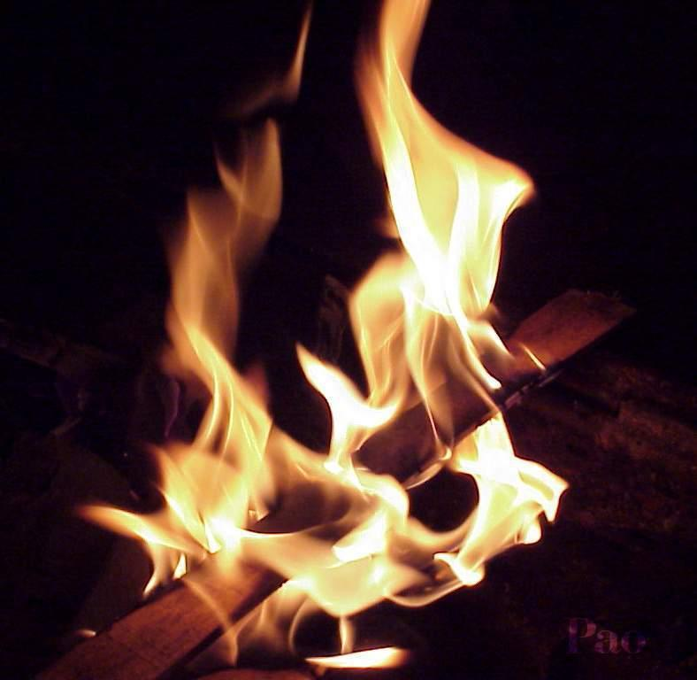
La energía
Es una propiedad de los cuerpos o sistemas que se relaciona con su capacidad para producir cambios en otros cuerpos o sistemas o en ellos mismos.
Para entender el significado de esta magnitud debemos conocer sus propiedades:
-
transformación, cambiando la forma en la que se presenta: \(\ce{E_C, E_P, E_{química}}\),...
-
conservación de la cantidad total de energía
-
degradación o pérdida de utilidad de la energía
-
transferencia de energía de un sistema a otro
La unidad de energía en el S.I. es el julio (J)
Otra unidad: la caloría (cal) \(\hspace{1cm}\) 1 cal = 4,18 J
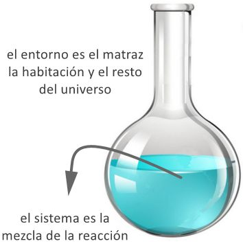
Sistemas termodinámicos
Parte del mundo físico que aislamos para su estudio mediante paredes reales o imaginarias. El resto del universo, que no forma parte del sistema, se llama entorno.
Tipos de sistemas:
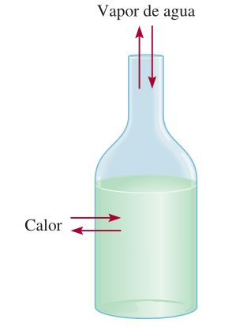
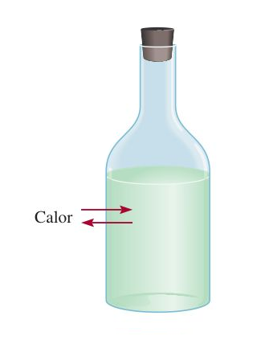
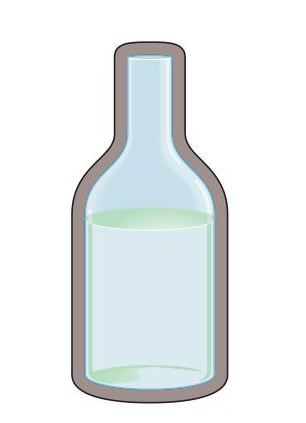
Ejemplos de tipos de sistemas
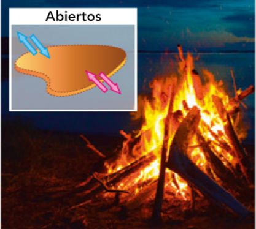
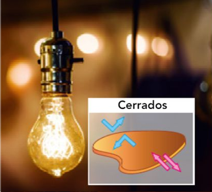
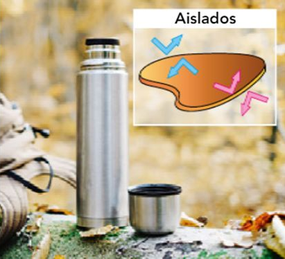
Variables termodinámicas
Son las magnitudes físicas y químicas que caracterizan a un sistema termodinámico. Un estado del sistema viene determinado por los valores que toman dichas variables.
Tipos:
-
Extensivas: su valor depende de la cantidad de materia del sistema. La masa, el volumen, la cantidad de sustancia, la energía interna, la entropía, etc.
-
Intensivas: su valor no depende de la cantidad de materia del sistema. Por ejemplo, la concentración, la densidad, la temperatura, etc.
Funciones de estado: variables termodinámicas cuyo valor depende solo de los estados inicial y final de un sistema, y no del proceso seguido.
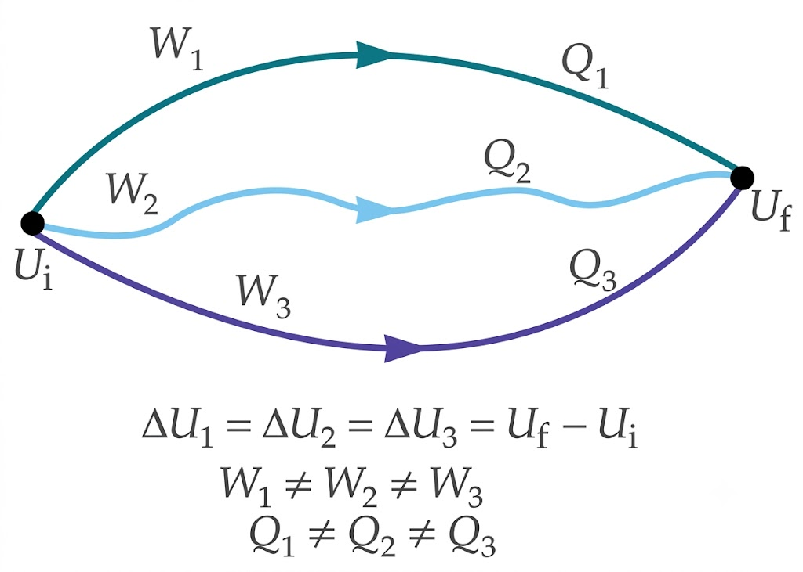 |
Son funciones de estado el volumen, la presión, la energía interna, la entalpía, la entropía, etc
Transferencia de energía: calor y trabajo
Cuando aumenta o disminuye la energía de un sistema, se dice que ha habido una transferencia de energía entre el sistema y el entorno, que puede hacerse en forma de:
-
Calor (\(\ce{Q}\)): debida a una diferencia de temperatura.
-
Trabajo (\(\ce{W}\)): debida a una fuerza que provoca un desplazamiento.
Calor y trabajo NO son formas de energía, sino mecanismos de transferencia de energía.
Calor:
-
\(\ce{Q > 0}\) si el sistema absorbe energía del entorno.
-
\(\ce{Q < 0}\) si el sistema cede energía al entorno.
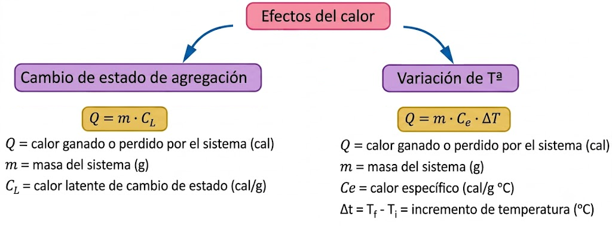
Trabajo
Trabajo realizado por una fuerza: fuerza por el desplazamiento de su punto de aplicación y por el coseno del ángulo que forman las direcciones de la fuerza y el desplazamiento.
\(\ce{W = F \cdot \Delta x \cdot cos \alpha}\)
Unidad de trabajo en S.I: julio (J)
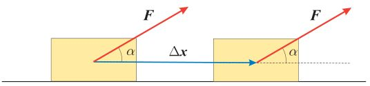
Trabajo de expansión-compresión asociado a los cambios de volumen, \(\ce{\Delta V}\), que sufre un sistema sometido a una presión, p.
\(\ce{\hspace{5cm} W = F \cdot \Delta x \cdot cos \alpha \hspace{1cm} \longrightarrow \hspace{1cm} W = F \cdot \Delta x }\)
\(\ce{W = - p \cdot \Delta V}\)
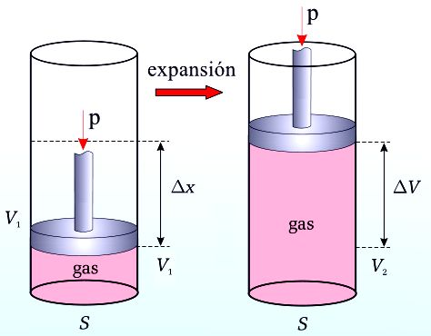
-
En un proceso de expansión: \(\ce{\Delta V > 0 \; \rightarrow \; W < 0}\) trabajo hecho por el sistema sobre el entorno.
-
En un proceso de compresión: \(\ce{\Delta V < 0 \; \rightarrow \; W > 0}\) trabajo hecho sobre el sistema.
02. Principios de la Termodinámica
Primer principio de la termodinámica
Es en esencia el principio de conservación de la energía aplicado a cualquier proceso termodinámico, controlando los intercambios de energía.
Energía interna (\(\ce{U}\)): suma de las energías de todas las partículas que forman el sistema (Energía cinética de las partículas, energía potencial, energía vibracional...)
No puede conocerse \(\ce{U}\) en valor absoluto, pero si sus variaciones, \(\ce{\Delta U}\), en función del calor, \(\ce{Q}\), y del trabajo \(\ce{W}\), intercambiados con el entorno durante un proceso.
La variación de la energía interna de un sistema es igual a la suma del calor y del trabajo, intercambiado con el entorno.
\(\ce{\Delta U = W + Q}\)
-
\(\ce{\Delta U > 0}\), si absorbe calor, \(\ce{+Q}\), o si se hace un trabajo sobre él, \(\ce{+W}\) (compresión).
-
\(\ce{\Delta U < 0}\), si pierde calor, \(\ce{-Q}\), o si efectúa un trabajo sobre el entorno, \(\ce{-W}\) (expansión).
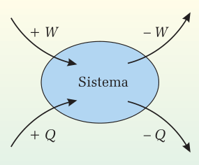
La energía interna es una función de estado.
Aplicaciones del primer principio
Las reacciones químicas, suelen realizarse o bien a \(\ce{p = cte}\) o bien a \(\ce{V = cte}\). El primer principio sirve para estudiar los intercambios de energía en los procesos químicos.
Procesos isocóricos (a volumen constante): Reacciones que se llevan a cabo en un recipiente cerrado.
Como \(\ce{V = cte \; \Longrightarrow \; W = 0}\).
El calor que se absorbe o se desprende en la reacción, \(\ce{Q_\text{v}}\) (calor a volumen cte), coincide con la variación de la energía interna que se produce en dicha reacción.
\(\ce{\Delta U = Q_\text{v}}\)
Si \(\ce{Qv > 0}\), reacción endotérmica, recibe calor del entorno y \(\ce{\Delta U > 0}\)
Si \(\ce{Qv < 0}\), reacción exotérmica, cede calor al entorno y \(\ce{\Delta U < 0}\)
Procesos isobáricos (a presión constante): Reacciones que se llevan a cabo en un recipiente abierto y a presión atmosférica.
Calor que se absorbe o se desprende en la reacción, \(\ce{Q_\text{p}}\) (calor a p = cte)
\(\ce{Q_\text{p} = \Delta U + p \cdot \Delta V}\)
Para expresar la transferencia de calor entre el sistema y el entorno en procesos a p = cte se suele utilizar una nueva magnitud, la entalpía, H: \(\ce{\quad H = U + p \cdot V}\)
\(\ce{Q_\text{p} = \Delta U + p \cdot \Delta V = (U_2 - U_1) + p \cdot (V_2 - V_1) = U_2 - U_1 + p \cdot V_2 - p \cdot V_1}\)
\(\ce{Q_\text{p} = (U_2 + p \cdot V_2) - (U_1 + p \cdot V_1) = H_2 - H_1}\)
\(\ce{p = cte \; \rightarrow \; p_1 = p_2 \hspace{2cm} Q_\text{p} = H_2 - H_1 = \Delta H}\)
\(\ce{Q_\text{p} = \Delta H}\)
Reacción endotérmica: \(\ce{\quad Q_\text{p} > 0 \; \rightarrow \; H_{productos} > H_{reactivos} \; \rightarrow \; \Delta H > 0}\)
Reacción exotérmica: \(\ce{\quad Q_\text{p} < 0 \; \rightarrow \; H_{productos} < H_{reactivos} \; \rightarrow \; \Delta H < 0 }\)
Relación entre Qp y Qv
La expresión que relaciona los calores a volumen y a presión constante es:
\(\ce{\hspace{5cm} \Delta H = \Delta U + p \cdot \Delta V \quad \rightarrow \quad}\) \(\ce{Q_\text{p} = Q_\text{v} + p \cdot \Delta V}\)
- Si la reacción química se produce entre sólidos, líquidos o en disolución, no se producirán variaciones apreciables de volumen
\(\hspace{4cm}\)\(\ce{Q_\text{p} \approx Q_\text{v}}\)\(\ce{ \quad \rightarrow \quad \Delta H = \Delta U}\)
- Si la reacción química se produce entre gases a una presión y temperaturas determinadas: el valor de \(\ce{\Delta n}\) = variación de mol de gases al pasar de reactivos a productos = número de mol de productos gaseosos \(-\) número de mol de reactivos gaseosos (\(\ce{\Delta n = n_\text{productos} - n_\text{reactivos}}\))
\(\ce{\hspace{5cm} Q_\text{p} = Q_\text{V} + \Delta n \cdot R \cdot T \; \rightarrow \; }\) \(\ce{\Delta H = \Delta U + \Delta n \cdot R \cdot T}\)
En reacciones con \(\ce{\Delta n = 0}\) como, \(\ce{H2 (g) + F2 (g) \rightarrow 2 HF (g) \; \rightarrow \; \Delta U = \Delta H}\)
03. Procesos físicos y entalpía
Entalpía de reacción \Delta H
Energía intercambiada en forma de calor a presión constante cuando los reactivos se han transformado en los productos.
Ecuación termoquímica: ecuación ajustada de la reacción en la que se indica el estado físico de cada sustancia y el calor intercambiado con el entorno, normalmente como \(\ce{\Delta H}\).
Si invertimos el orden de la reacción, se cambia el signo de \(\ce{\Delta H_r}\).
Si multiplicamos la ecuación por un número, también se multiplica la \(\ce{\Delta H_r}\) ya que la entalpía es una variable extensiva, depende de la cantidad de materia.
Diagramas entálpicos
Diagrama entálpico: representación gráfica de la variación de entalpía entre los reactivos y los productos en una reacción química.
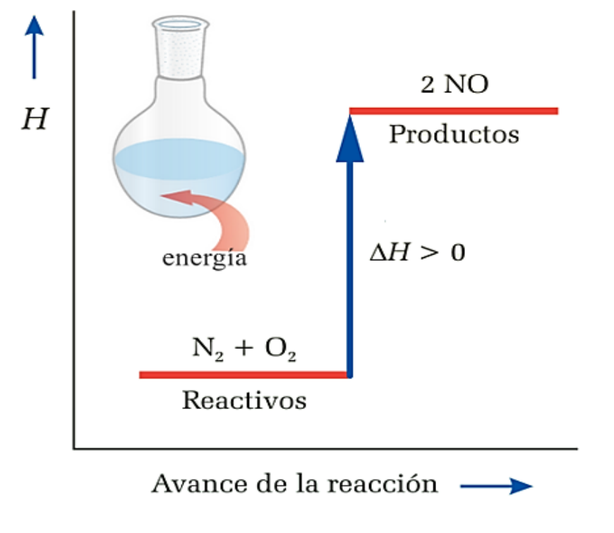
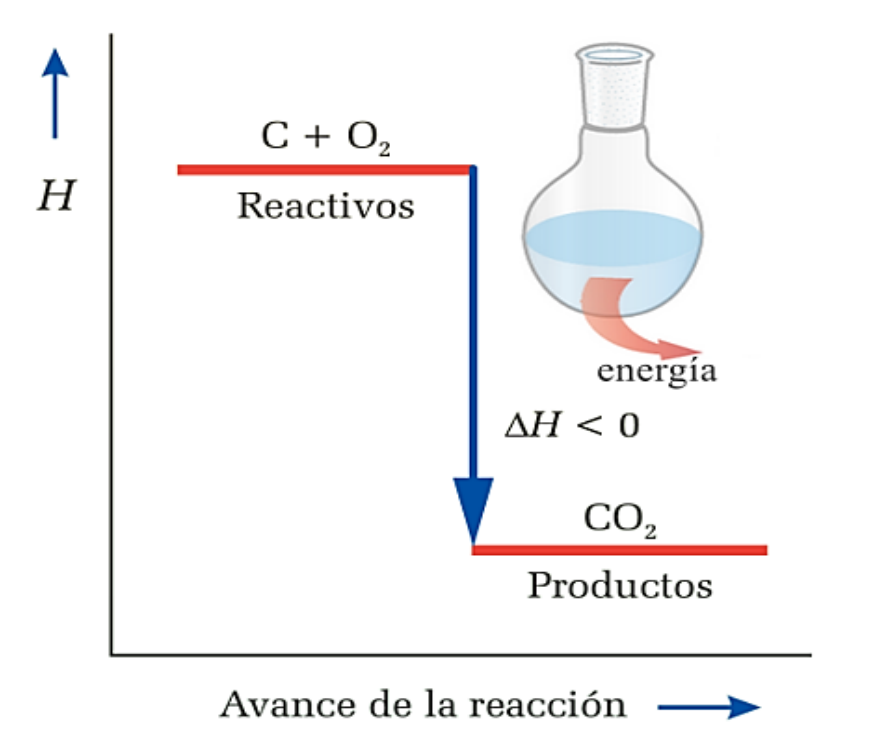
04. Cálculo de entalpías
Para averiguar la entalpía de reacción, \(\ce{\Delta H_r}\) de un proceso hay varios métodos:
- A partir de la determinacion experimental
- A partir de las entalpías de formación
- A partir de la ley de Hess
- A partir de las entalpías de enlace
1. Cálculo a partir de la determinación experimental:
El calorímetro contiene una masa de agua a cierta T, en la cual, o se produce la reacción, o está en contacto con el recipiente donde ésta ocurre.
La \(\ce{\Delta H_r}\) será absorbida o liberada por el agua del calorímetro, lo que hace variar su T.
Como el sistema es adiabático:
\(\ce{Q_{reacción} + Q_{agua} = 0 \; \rightarrow \; Q_{reacción} = - Q_{agua}}\)
\(\ce{Q_{agua} = m \cdot c_{agua} \cdot \Delta T}\)
La reacción calienta el agua, y también los componentes del calorímetro. El calor invertido en esto es específico de cada calorímetro y debe tenerse en cuenta, o se cometerá un error de medición.
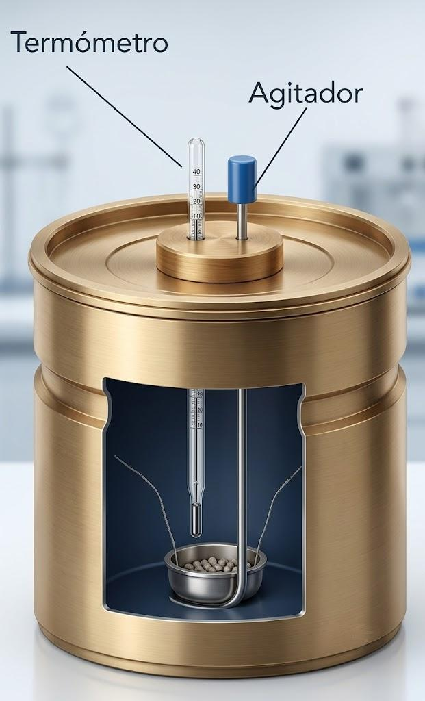
2. Cálculo de la \(\ce{\Delta H_R}\) a partir de entalpías estándar de formación (\(\ce{\Delta H^{\circ}_f}\))
La entalpía de reacción, \(\ce{\Delta H_r}\) podría calcularse: \(\ce{H_{productos} - H_{reactivos}}\), pero no es posible medir el valor absoluto de H de una sustancia, solo valores relativos con respecto a una referencia arbitraria:
El punto de referencia para la H, es la entalpía estándar de formación (\(\ce{\Delta H^{\circ}_f}\)) de cualquier elemento, en su forma más estable (a 1 atm y 25 \(^{\circ}\)C), que es cero.
\(\ce{\Delta H^{\circ}_f}\) (C, grafito) = 0 y \(\ce{\Delta H^{\circ}_f}\) (C, diamante) = 1,90 kJ/mol
La definición de la entalpía estándar de formación \(\ce{\Delta H^{\circ}_f}\) de un compuesto sería el calor asociado a la formación de 1 mol de compuesto a partir de sus elementos a una presión de 1 atm.
A partir de las entalpías de formación estándar es posible obtener entalpías de reacción:
\(\ce{\Delta H^{\circ}_{reacción} = \sum n \cdot \Delta H^{\circ}_f (productos) - \sum m \cdot \Delta H^{\circ}_f (reactivos)}\)
\(\ce{n, m =}\) coeficientes estequiométricos de productos y reactivos; el estado estándar se designa con el símbolo «\(^{\circ}\)», y especifica una T, que utiliza valores de \(\ce{\Delta H^{\circ}_f}\) a 25 \(^{\circ}\)C
Las entalpías de formación estándar están tabuladas, a 25 \(^{\circ}\)C
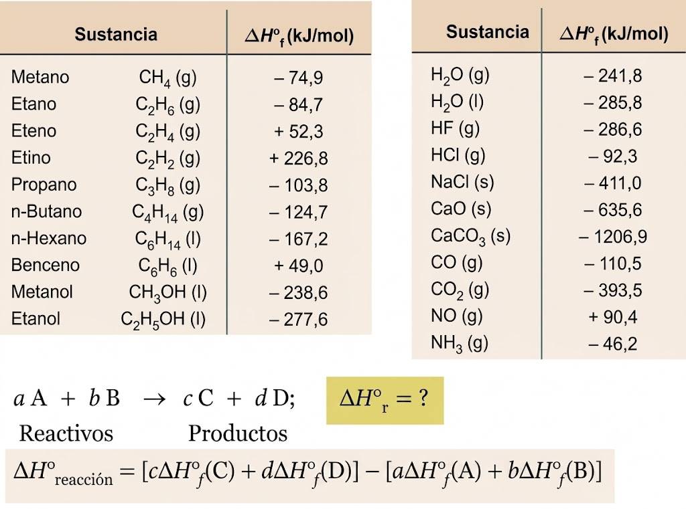
3. Cálculo a partir de la ley de Hess
La variación de entalpía que se produce cuando ocurre una determinada reacción es la misma tanto si ésta se produce en una sola etapa, como en varias etapas.
Cuando una reacción química puede expresarse como suma algebraica de otras, su \(\ce{\Delta H}\) reacción es igual a la misma suma algebraica de las \(\ce{\Delta H}\) de las reacciones parciales.
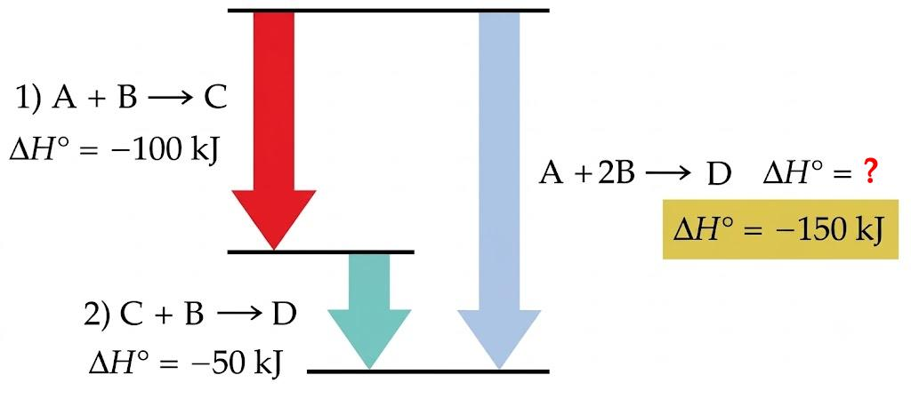
Ejercicio de la ley de Hess
Halla la entalpía de formación del amoniaco a partir de las siguientes ecuaciones:
\(\ce{1) 2 H2 (g) + N2 (g) \rightarrow N2H4 (g) \hspace{1.4cm} \Delta H^{\circ}_1 = + 95,4 kJ}\)
\(\ce{2) N2H4 (g) + H2 (g) \rightarrow 2 NH3 (g) \hspace{1cm} \Delta H^{\circ}_2 = - 187,6 kJ}\)
Solución:
La entalpía de reacción (formación del \(\ce{NH3}\)) que nos piden es de la siguiente reacción:
\(\ce{\hspace{3cm} 3 H2 (g) + N2 (g) \rightarrow 2 NH3 (g) \hspace{1.4cm} \Delta H^{\circ}_r = ?}\)
Aplicando la ley de Hess, si sumamos las dos reacciones dadas obtenemos la ecuación buscada.
\(\ce{\Delta H^{\circ}_{reacción} = \Delta H^{\circ}_1 + \Delta H^{\circ}_2 = + 95,4 kJ + (- 187,6 kJ) = - 92,2 kJ }\)
Pero en ella se forman 2 mol de \(\ce{NH3}\) por lo tanto, la entalpía de formación del \(\ce{NH3}\) sería: \(\ce{- 92,2 / 2 = - 46,1 kJ/mol}\)
La ley de Hess permite tratar las ecuaciones termoquímicas como ecuaciones algebraicas, pudiendo sumarlas, restarlas o multiplicarlas por un número, junto a las entalpías de reacción correspondientes.
4. Cáculo a partir de la entalpía de enlace
La entalpía de enlace es un valor medio de la energía que se requiere para romper 1 mol de dichos enlaces.
Cuanto mayor sea la energía de enlace, más fuerte y más estable será dicho enlace.
Una reacción consiste en una reordenación de los átomos de los reactivos para formar los productos. Esto supone la ruptura de ciertos enlaces y la formación de otros nuevos.
La energía intercambiada en ese proceso de ruptura y formación de enlaces es otra forma de determinar “aproximadamente” la entalpía de una reacción \(\ce{\Delta H_r}\):
\(\ce{\Delta H^{\circ}_{reacción} = \sum (energía de enlaces rotos) - \sum (energía de enlaces formados)}\)
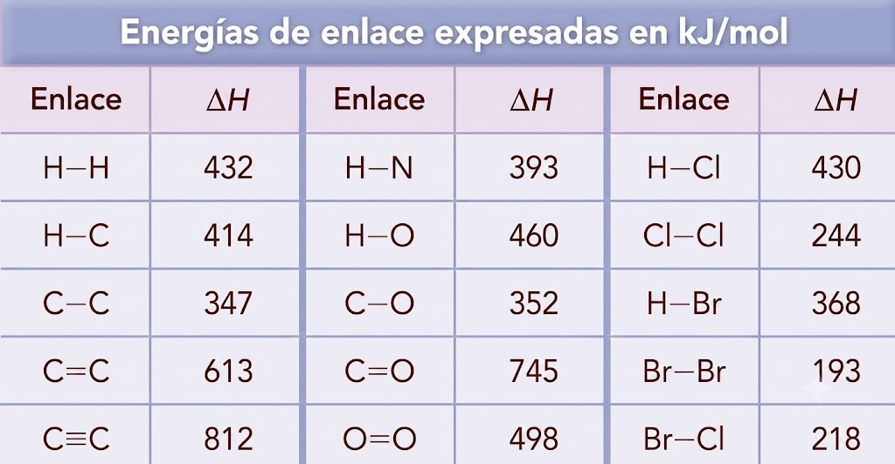
Ejercicio de la entalpía de enlace
Calcula la entalpía estándar de la reacción de combustión del metanol:
\(\ce{\hspace{5cm} CH3OH + 3/2 O2 \rightarrow CO2 + 2 H2O}\)
a partir de los datos de entalpías de enlace (kJ/mol): \(\ce{C-H = 414; C-O = 352; O=O = 498; O-H = 460; C=O = 745}\)
Solución:
Aplicando la expresión:
\(\ce{\Delta H^{\circ}_{reacción} = \sum (energía de enlaces rotos) - \sum (energía de enlaces formados)}\)
\(\ce{\Delta H^{\circ}_{reacción} = (3 mol \cdot 414 kJ/mol + 1 mol \cdot 352 kJ/mol + 1 mol \cdot 460 kJ/mol + }\)
\(\ce{\hspace{2cm} + 3/2 mol \cdot 498 kJ/mol) - (2 mol \cdot 745 kJ/mol + 4 mol \cdot 460 kJ/mol)}\)
\(\ce{\Delta H^{\circ}_{reacción} = - 529 kJ }\)
05. Segundo principio y Entropía
El primer principio establece que cuando un sistema experimenta una transformación, se cumple que:
\(\ce{\hspace{3cm} \Delta U = Q + W}\)
La energía total se conserva, pero hay procesos:
-
Espontáneos: se producen sin ninguna intervención externa
-
No espontáneos: se dan gracias a una acción externa continua
En principio, puede parecer que solo los procesos exotérmicos son espontáneos, pero hay procesos endotérmicos que también lo son.
Para predecir en qué sentido un sistema va a evolucionar de forma espontánea, el primer principio no es suficiente, solo \(\ce{\Delta H}\) no sirve para determinar la espontaneidad, necesitamos una nueva magnitud física: ENTROPÍA
Concepto de entropía: S
La entropía mide el grado de desorden de un sistema a nivel molecular
-
Es una magnitud extensiva y función de estado
-
Se mide en J/K
-
\(\ce{S_{gas} > S_{líquido} >S_{sólido}}\)
-
La entropía de un sistema aumenta con la temperatura.
Cuando un sistema intercambia energía con el entorno, la variación de entropía, depende del calor intercambiado y de la temperatura a la que se produce el intercambio.
\(\ce{\Delta S = \dfrac {Q}{T} }\)
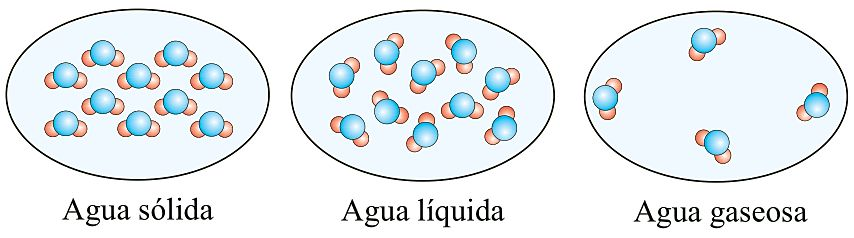
Segundo principio de la termodinámica
-
Plantea la imposibilidad de que puedan producirse ciertos procesos.
-
Conecta la entropía y la espontaneidad de un proceso
Un sistema evoluciona de forma espontánea si la entropía del universo aumenta con esa transformación.
\(\ce{\Delta S_{universo} > 0 }\)
\(\ce{\hspace{6cm} \Delta S_{universo} = \Delta S_{sistema} + \Delta S_{entorno}}\)
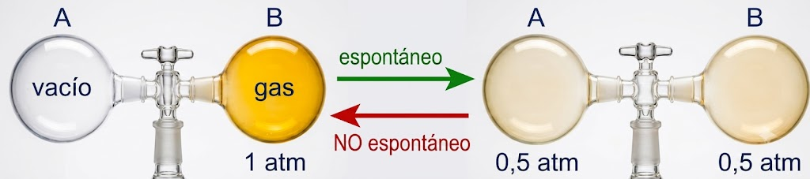
El gas se distribuye uniformemente entre ambos matraces; pero NO se da el proceso inverso: que un gas encerrado en 2 matraces se concentre espontáneamente en uno solo.
La entropía y el segundo principio
\(\ce{\Delta S_{universo} = \Delta S_{sistema} + \Delta S_{entorno}}\)
Reacción exotérmica
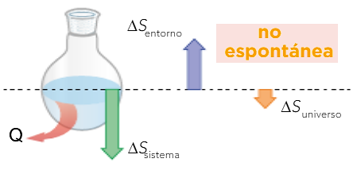
- La espontaneidad de los procesos exotérmicos depende de cómo varíe la \(\ce{\Delta S}\) del sistema.
Reacción endotérmica
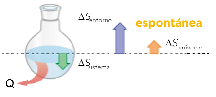
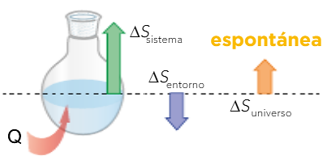
- La espontaneidad de los procesos endotérmicos depende de cómo varíe la \(\ce{\Delta S}\) del entorno.
Variacción de entropía en una reacción
El tercer principio de la Termodinámica establece que:
La entropía de una sustancia pura (elemento o compuesto) que se halle como un cristal perfecto a 0 K es cero
La entropía nunca puede ser negativa ya que 0 K es la temperatura más baja posible y a cualquier otra S > 0
Si puede haber \(\ce{\Delta S < 0}\)
A partir de las tablas de entropías molares de las sustancias en condiciones estándar \(\ce{S^{\circ}}\), la \(\ce{\Delta S^{\circ}}\) de una reacción se calcula:
\(\ce{\Delta S^{\circ}_{reacción} = \sum n_p \cdot S^{\circ} (productos) - \sum n_r \cdot S^{\circ} (reactivos)}\)
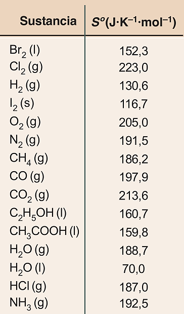
Para una reacción genérica dada sería:
\(\ce{\hspace{5cm} a A + b B \rightarrow \; c C + d D}\)
\(\ce{\hspace{2cm} \Delta S^{\circ}_{reacción} =[c \cdot S^{\circ} (C) + d \cdot S^{\circ} (D)] - [a \cdot S^{\circ} (A) + b \cdot S^{\circ} (B)]}\)
a, b, c y d están en mol
Cómo averiguar el signo de la \(\ce{\Delta S}\) de una reacción
Para predecir el signo de la \(\ce{\Delta S}\) de una reacción si el número de partículas de gas es mayor en los productos que en los reactivos \(\ce{\Delta S > 0}\); si es menor \(\ce{\Delta S < 0}\) y si no varía \(\ce{\Delta S = 0}\)
\(\ce{C (s) + \color{blue}{1/2 O2 (g)} \rightarrow \color{blue}{CO (g)} \hspace{2.3cm} \Delta S^{\circ} > 0}\)
\(\ce{CaCO3 (s) \rightarrow CaO (s) + \color{blue}{CO2 (g)} \hspace{1cm} \Delta S^{\circ} > 0}\)
\(\ce{\color{blue}{PCl3 (g)} + \color{blue}{Cl2 (g)} \rightarrow \color{blue}{PCl5 (g)} \hspace{1.6cm} \Delta S^{\circ} < 0 }\)
06. Espontaneidad y Energía Libre
Energía libre de Gibbs
Para salvar la dificultad de tener que determinar la \(\ce{\Delta S_{universo}}\) para poder saber si una reacción es o no espontánea, se introduce una nueva magnitud: la energía libre de Gibbs (G)
\(\ce{\hspace{5cm} G = H - T \cdot S}\)
Es una función de estado y en el S.I. se mide en Julios (J)
T = temperatura en K. No podemos conocer su valor absoluto pero si su variación, que en condiciones de p y T constantes es:
\(\ce{\Delta G = \Delta H - T \cdot \Delta S}\)
❗ Un proceso es espontáneo si \(\ce{\Delta G < 0}\)
Si \(\ce{\Delta G > 0}\) el proceso no es espontáneo
Si \(\ce{\Delta G = 0}\) el sistema está en equilibrio
Variacion de la energía libre de Gibbs en una reacción química
Se puede calcular a partir de la variación de entalpía estándar de reacción y de la variación de entropía estándar de la reacción:
\(\ce{\Delta G^{\circ}_r = \Delta H^{\circ}_r - T \cdot \Delta S^{\circ}_r}\)
También se puede hallar a partir de las energías libres de formación de reactivos y productos, usando la ley de Hess.
\(\ce{\Delta G^{\circ}_r = \sum n_p \cdot \Delta G^{\circ}_f (productos) - \sum n_r \cdot \Delta G^{\circ}_f (reactivos)}\)
Para la reacción: \(\quad \ce{\text{a} A + \text{b} B \rightarrow \text{c} C + \text{d} D}\)
\(\ce{\hspace{2cm} \Delta G^{\circ}_r = (c \cdot \Delta G^{\circ}_f C + d \cdot \Delta G^{\circ}_f D) - (a \cdot \Delta G^{\circ}_f A + b \cdot \Delta G^{\circ}_f B)}\)
Cuanto más negativo es el valor de la energia libre de Gibbs, más estable es la especie química formada y más espontánea es la reacción.
La energía libre de Gibbs estándar de formación de un elemento químico en su estado más estable (natural) es 0, al igual que ocurría con la entalpía estandar de formación (\(\ce{N2(g)}\), \(\ce{Br2(l)}\), Fe(s)...)
Espontaneidad de las reacciones
Partiendo de la ecuación de la energía libre de Gibbs, \(\ce{\Delta G = \Delta H - T \cdot \Delta S}\), se puede deducir que:
-
Si en una reacción exotérmica (\(\ce{\Delta H < 0}\)) se produce un aumento de la entropía (\(\ce{\Delta S > 0}\)), tendremos que \(\ce{\Delta G < 0}\) y, por tanto, el proceso es espontáneo.
-
Pero hay reacciones en las que los términos entálpico (\(\ce{\Delta H}\)) y entrópico (\(\ce{T \cdot \Delta S}\)) están enfrentados; en estos casos, decide el valor de la temperatura, \(\ce{T}\), a la que se realiza el proceso, ya que va a determinar si (\(\ce{T \cdot \Delta S}\)) es más o menos negativo y por tanto si favorece o no la espontaneidad de la reacción.
Por ejemplo, el carbonato de amonio se descompone desprendiendo un fuerte olor a amoniaco, según la reacción:
\(\ce{\hspace{2cm} (NH4)2CO3 (s) \rightarrow NH4HCO3 (s) + NH3 (g) \hspace{1cm} \Delta H = 40,2 kJ}\)
Esta reacción es endotérmica (\(\ce{\Delta H > 0}\)) y transcurre con un aumento de la entropía (\(\ce{\Delta S > 0}\)), luego solo será espontánea (\(\ce{\Delta G < 0}\)) a temperaturas altas; cuando se cumpla que: \(\ce{|T \cdot \Delta S| > |\Delta H|}\)
Evaluación de la espontaneidad
Influencia de la temperatura en la espontaneidad de una reacción química:
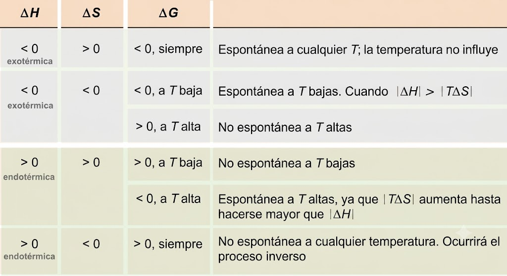